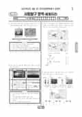

문제지

전국연합학력평가 · 시·도교육청 주관
2022년 9월 고2 학력평가 사회탐구 세계지리 1등급컷은 원점수 44점(추정), 표준점수 최고점은 75점입니다.
원점수 1등급컷은 공식 발표값이 아니라 EBSi·입시기관 값입니다. 등급별 값은 등급컷 표, 출처 구분은 데이터 원칙에 있습니다.

시험지를 먼저 풀어 보세요. 등급컷·표준점수·난이도는 흐리게 가려 뒀어요.
| 등급 | 원점수 | 표준점수 | 백분위 |
|---|---|---|---|
| 1 | 44 | 70 | 96 |
| 2 | 38 | 65 | 90 |
| 3 | 31 | 58 | 78 |
| 4 | 23 | 51 | 59 |
| 5 | 17 | 46 | 40 |
| 6 | 12 | 41 | 23 |
| 7 | 9 | 38 | 10 |
| 8 | 7 | 37 | 6 |
등급별 컷 · EBSi 원점수 추정 · 만점 50점
| 등급 | 표준점수 이상 | 인원(명) | 비율 |
|---|---|---|---|
| 1 | 70 | 672 | 4.06% |
| 2 | 65 | 1,152 | 6.97% |
| 3 | 58 | 1,996 | 12.07% |
| 4 | 51 | 3,225 | 19.51% |
| 5 | 46 | 3,204 | 19.38% |
| 6 | 41 | 2,803 | 16.95% |
| 7 | 38 | 2,021 | 12.22% |
| 8 | 37 | 902 | 5.46% |
| 9 | 30 | 559 | 3.38% |
시·도교육청 공개 자료
출처: 시·도교육청이 공개한 전국연합학력평가 성적 분석·통계자료(공개 자료 보기).
발행 기관: 시·도교육청(전국연합학력평가). 파일 위치: 이 사이트가 보관한 사본. 저작권은 발행 기관에 있습니다. 원본과 다르거나 게시 중단이 필요하면 연락처로 알려 주세요. 등급컷 출처 구분은 데이터 원칙에서 설명합니다.
막대 색은 역대 대비 난이도 · 진한 막대가 이 시험 · 막대를 누르면 그 회차로 이동
| 회차 | 1등급컷 | 표점 최고 | 1등급 표점 | 난이도 |
|---|---|---|---|---|
| 9월 학평2022년 고2이 시험 | 44 | 75 | 70 | 매우 어려움 |
| 6월 학평2022년 고2 | 41 | 78 | 69 | 매우 어려움 |
| 3월 학평2022년 고2 | 47 | 68 | 65 | 매우 쉬움 |
| 11월 학평2021년 고2 | 45 | 71 | 67 | 보통 |
| 6월 학평2021년 고2 | 44 | 73 | 68 | 어려움 |
| 3월 학평2021년 고2 | 45 | 69 | 64 | 매우 쉬움 |